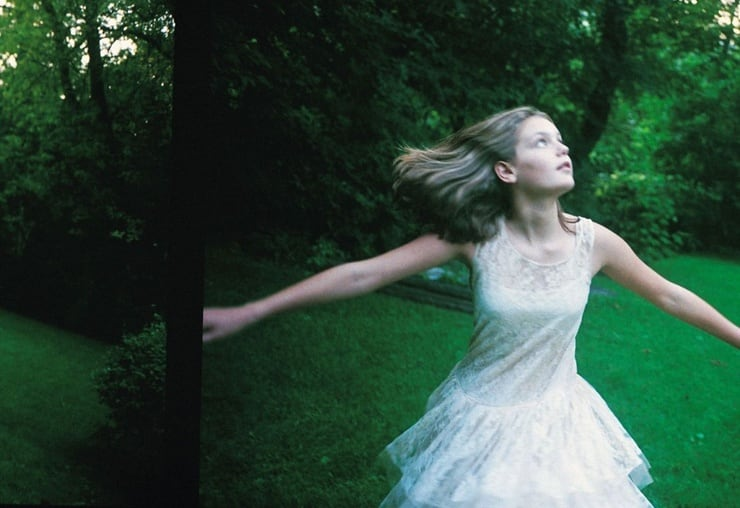
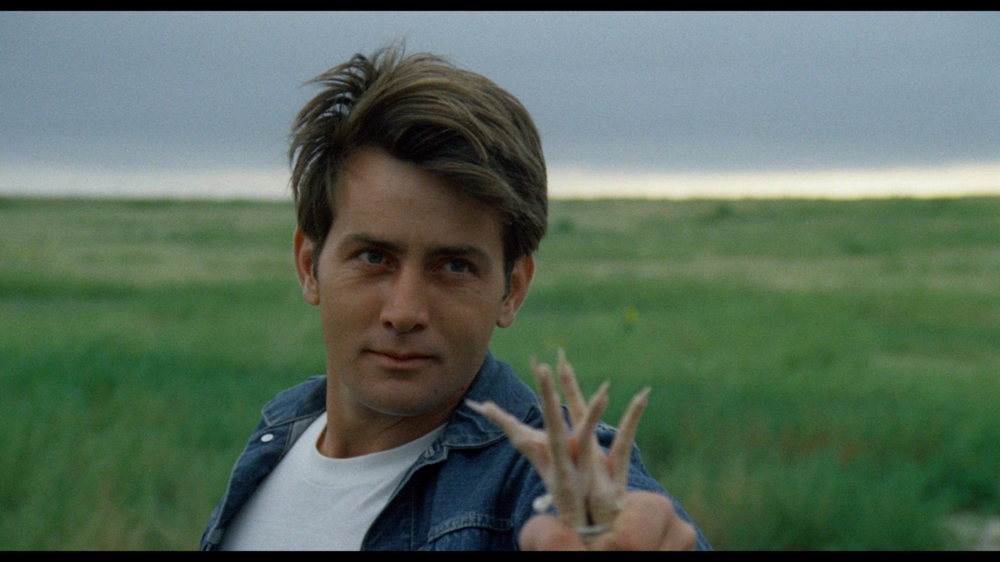
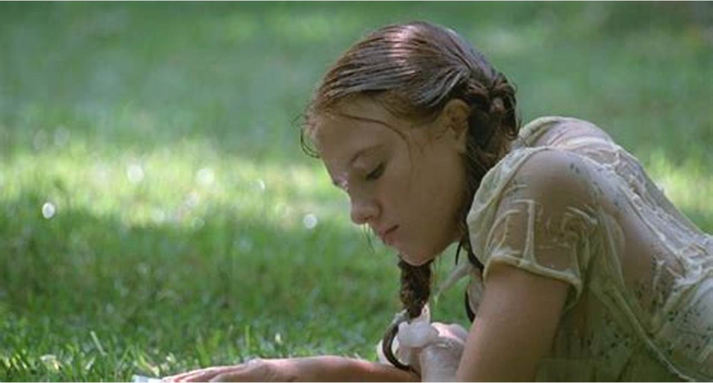
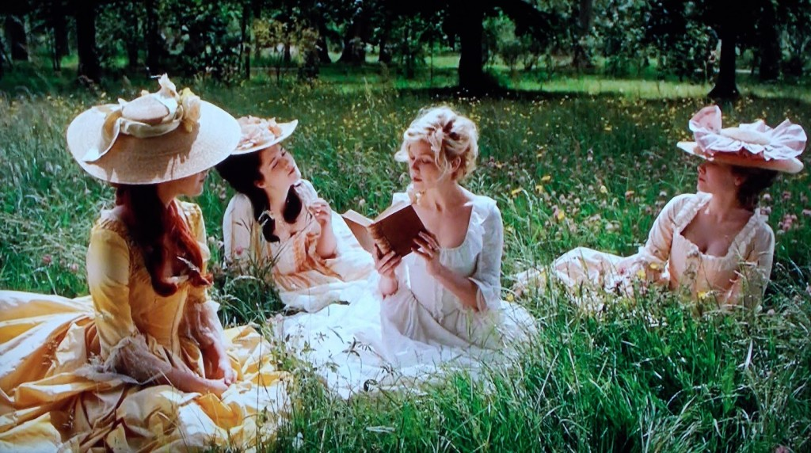
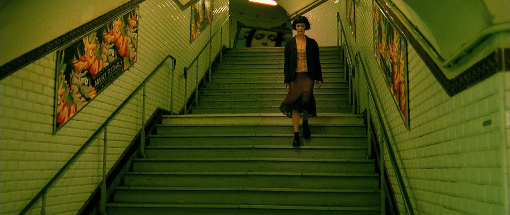
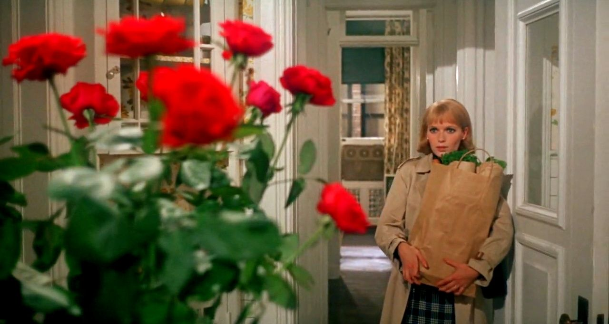
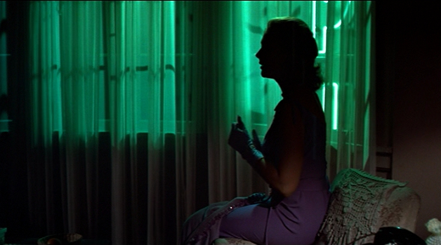
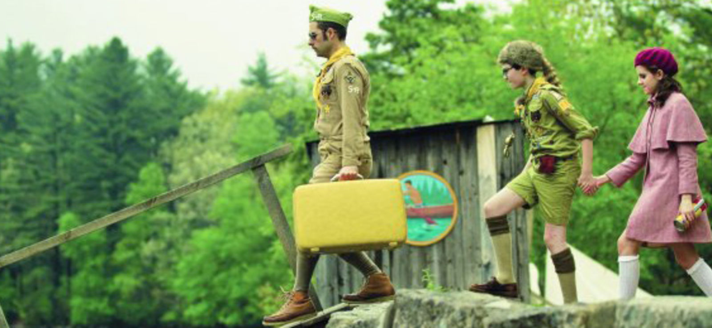
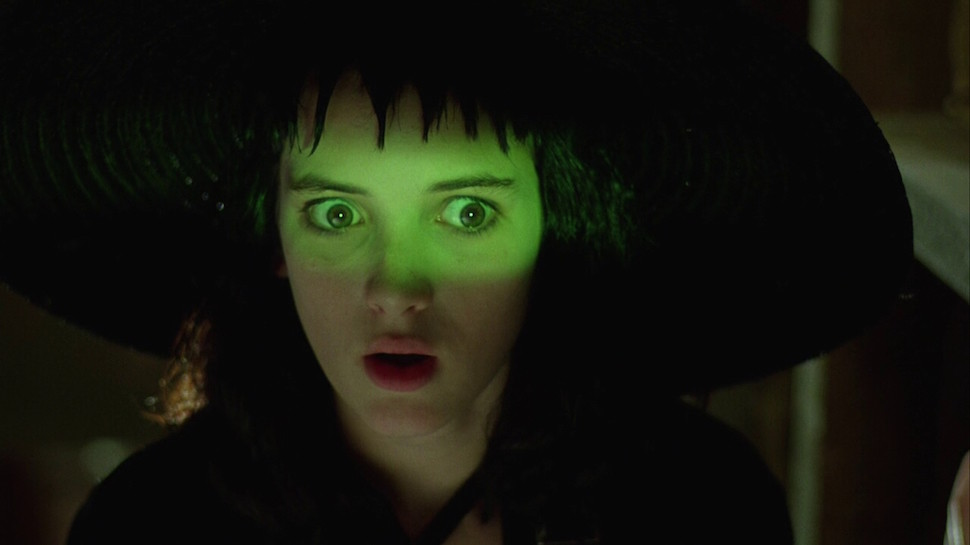
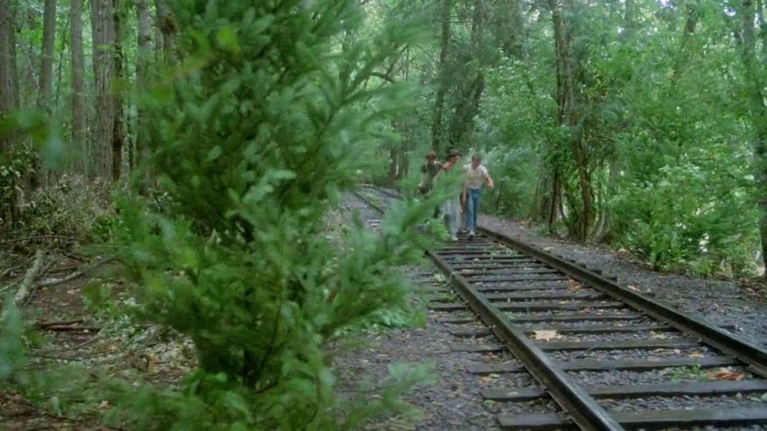

green ~ the misunderstood artist
green is often used to depict a character who has their head in the clouds, or who may be a little lost (Amelie, Lolita, Ben) but is, on the flipside, quite stubborn. the association of the color also lies with fertility and youth, as it is tied to nature and rebirth. often these characters are female, and have a sense that no one quite understands them (Marie Antoinette, Cecilia Lisbon). this color is, like the color red, very emotive, but in a much more subtle way. rather than boldly showing the audience the connotation of the color, green is used much more timidly in film, and often the connotations are less obvious and upfront. green is also used commonly in horror and ghost films to represent an unsafe location, or unnatural conditions (Rosemary's Baby, Beetlejuice, Vertigo).
if you are :
young at heart
headstrong
misunderstood
you are a green character!